In this document we discuss the finite-element-based solution of the Helmholtz equation in cylindrical polar coordinates, using a Fourier-decomposition of the solution in the azimuthal direction. This is useful for solving time-harmonic wave problems in 3D axisymmetric domains, e.g. the scattering of acoustic sound field from a sphere, the example we consider below.
Theory: The Fourier-decomposed Helmholtz equation
The Helmholtz equation governs time-harmonic solutions of problems governed by the linear wave equation
![\[ \nabla^2 U(x,y,z,t) = \frac{1}{c^2} \frac{\partial^2 U(x,y,z,t)}{\partial t^2}, \ \ \ \ \ \ \ \ \ \ \ \ (1) \]](form_0.png)
where  is the wavespeed. Assuming that 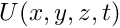 is time-harmonic, with frequency
is the wavespeed. Assuming that 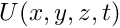 is time-harmonic, with frequency  , we write the real function as
, we write the real function as
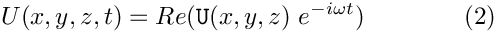
where 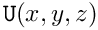 is complex-valued. This transforms (1) into the Helmholtz equation
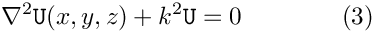
where
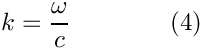
is the wave number. Like other elliptic PDEs the Helmholtz equation admits Dirichlet, Neumann (flux) and Robin boundary conditions.
If the equation is solved in an infinite domain (e.g. in scattering problems) the solution must satisfy the so-called Sommerfeld radiation condition which in 3D has the form
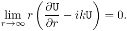
Mathematically, this conditions is required to ensure the uniqueness of the solution (and hence the well-posedness of the problem). In a physical context, such as a scattering problem, the condition ensures that scattering of an incoming wave only produces outgoing not incoming waves from infinity.
These equations can be solved using oomph-lib's cartesian Helmholtz elements, described in
another tutorial. Here we consider an alternative approach in which we solve the equations in cylindrical polar coordinates 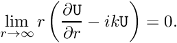, related to the cartesian coordinates  via
via
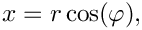
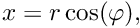
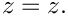
We then decompose the solution into its Fourier components by writing
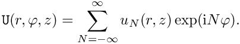
Since the governing equations are linear we can compute each Fourier component 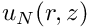 individually by solving
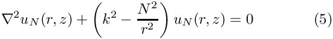
while specifying the Fourier wavenumber 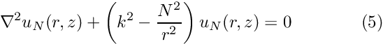 as a parameter.
Discretisation by finite elements
The discretisation of the Fourier-decomposed Helmholtz equation itself only requires a trivial modification of its cartesian counterpart. Since most practical applications of the Helmholtz equation involve complex-valued solutions, we provide separate storage for the real and imaginary parts of the solution – each Node therefore stores two unknowns values. By default, the real and imaginary parts are stored as values 0 and 1, respectively; see the section The enumeration of the unknowns for details.
The application of Dirichlet and Neumann boundary conditions is straightforward and follows the pattern employed for the solution of the Poisson equation:
- Dirichlet conditions are imposed by pinning the relevant nodal values and setting them to the appropriate prescribed values.
- Neumann (flux) boundary conditions are imposed via
FaceElements(here theFourierDecomposedHelmholtzFluxElements). As usual we attach these to the faces of the "bulk" elements that are subject to the Neumann boundary conditions.
The imposition of the Sommerfeld radiation condition for problems in infinite domains is slightly more complicated. In the following discussion we will assume that the infinite domain is truncated at a spherical artificial boundary  of radius 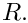 [The methodology can easily be modified to deal with other geometries but this has not been done yet – any volunteers?]. All methods exploit the fact that the relevant solution of the Helmholtz equation can be written in spherical polar coordinates 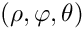 as
of radius 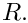 [The methodology can easily be modified to deal with other geometries but this has not been done yet – any volunteers?]. All methods exploit the fact that the relevant solution of the Helmholtz equation can be written in spherical polar coordinates 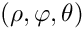 as
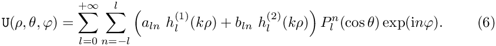
where the 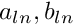 are arbitrary coefficients and the functions
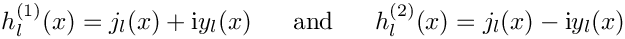
are the spherical Hankel functions of first and second kind, respectively, expressed in terms the spherical Bessel functions
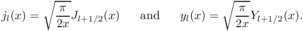
The functions
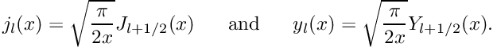
are the associated Legendre functions, expressed in terms of the Legendre polynomials
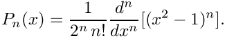
This definition shows that 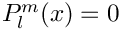 for 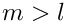 which explains the limited range of summation indices in the second sum in (6).
The relation between the cylindrical polar coordinates  and spherical polar coordinates 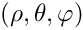 is given by
and spherical polar coordinates 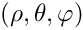 is given by
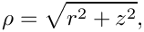
![\[ \theta = \arctan(r/z), \]](form_32.png)
![\[ \varphi = \varphi, \]](form_33.png)
so 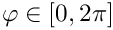 remains unchanged, and
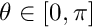 sweeps from the north pole ( ), via the equator ( 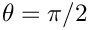 ) to the south pole (  ).
).
The Dirichlet-to-Neumann mapping (DtN)
Assuming that the artificial outer boundary is sufficiently far from the region of interest, so that any near field effects associated with the scatterer have decayed, we have to ensure that the solution on contains only outgoing waves. For our choice of the time-dependence in (2), such waves are represented by the terms involving the spherical Hankel functions of the first kind, 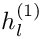, in (6).
The solution on (and near) is therefore given by
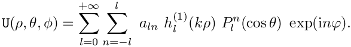
Restricting ourselves to the single azimuthal Fourier mode 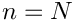 to be determined by (5), we have
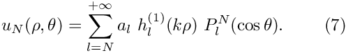
We multiply this equation by 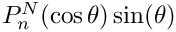, integrate over 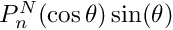, and exploit the orthogonality of the Legendre functions, to show that
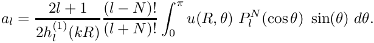
Using these coefficients, we can differentiate (7) to obtain the normal derivative of the solution on the (spherical) artificial outer boundary in terms of the solution itself:
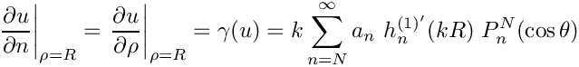
i.e.
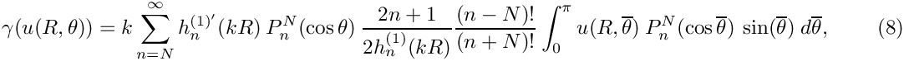
a Dirichlet-to-Neumann mapping.
Equation (8) provides a condition on the normal derivative of the solution along the artificial boundary and is implemented in the FourierDecomposedHelmholtzDtNBoundaryElement class. Since 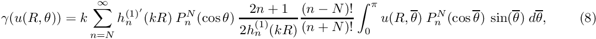 depends on the solution everywhere along the artificial boundary, the application of the Sommerfeld radiation condition via (8) introduces a non-local coupling between all the degrees of freedom located on that boundary. This is handled by classifying the unknowns that affect but are not associated with an element's own nodes as its external Data.
To facilitate the setup of the interaction between the FourierDecomposedHelmholtzDtNBoundaryElements, oomph-lib provides the class FourierDecomposedHelmholtzDtNMesh which provides storage for (the pointers to) the FourierDecomposedHelmholtzDtNBoundaryElements that discretise the artificial boundary. The member function FourierDecomposedHelmholtzDtNMesh::setup_gamma() pre-computes the values required for the imposition of equation (8). The radius  of the artificial boundary and the (finite) upper limit for the sum in (8) are specified as arguments to the constructor of the
of the artificial boundary and the (finite) upper limit for the sum in (8) are specified as arguments to the constructor of the FourierDecomposedHelmholtzDtNMesh.
NOTE: Since depends on the solution, it must be recomputed whenever the unknowns are updated during the Newton iteration. This is best done by adding a call to FourierDecomposedHelmholtzDtNMesh::setup_gamma() to Problem::actions_before_newton_convergence_check(). [If Helmholtz's equation is solved in isolation (or within a coupled, but linear problem), Newton's method will converge in one iteration. In such cases the unnecessary recomputation of after the one-and-only Newton iteration can be suppressed by setting Problem::Problem_is_nonlinear to false.]
A specific example
We will now demonstrate the methodology for a specific example for which the exact solution of (5) is given by
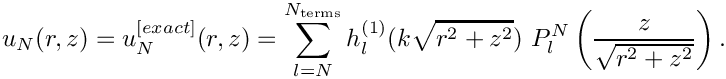
This solution corresponds to the superposition of several outgoing waves of the form (7) with coefficients 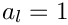. We solve the Helmholtz equation in the infinite region surrounding the unit sphere on whose surface we impose flux boundary conditions consistent with the derivative of the exact solution.
To solve this problem numerically, we discretise the annular domain 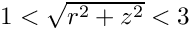 with finite elements and apply the Sommerfeld radiation condition using a Dirichlet-to-Neumann mapping on the artificial outer boundary located at 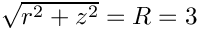.
The two plots below show a comparison between the exact and computed solutions for 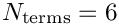 , a Fourier wavenumber of 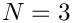 , and a (squared) Helmholtz wavenumber of  .
.


The numerical solution
The global namespace
As usual, we define the problem parameters in a global namespace. The main parameter are the (square of the) Helmholtz wave number, 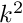, and the Fourier wavenumber, . The parameter Nterms_for_DtN determines how many terms are to be used in the computation of the integral in the Dirichlet-to-Neumann mapping (8); see The accuracy of the boundary condition elements.
Next we define the coefficients
required for the specification of the exact solution
and its derivative,
whose listings we omit here.
The driver code
The driver code is very straightforward. We create the problem object, discretising the domain with 3x3-noded QFourierDecomposedHelmholtzElements and set up the output directory.
We solve the problem for a range of Fourier wavenumbers and document the results.
The problem class
The problem class is very similar to that employed for the solution of the 2D Poisson equation with flux boundary conditions or, of course, the 2D cartesian Helmholtz problem discussed in another tutorial.
We provide two separate meshes of FaceElements: one for the inner boundary where the FourierDecomposedHelmholtzFluxElements apply the Neumann condition, and one for the outer boundary where we apply the (approximate) Sommerfeld radiation condition. As discussed in section The Dirichlet-to-Neumann mapping (DtN) , we use the function actions_before_newton_convergence_check() to recompute the integral whenever the unknowns are updated during the Newton iteration.
The problem constructor
We start by building the bulk mesh, using the TwoDAnnularMesh.
Next we create and populate the mesh of elements containing the DtN boundary elements on the artificial outer boundary,
and attach flux elements to the inner boundary:
We combine the various meshes to a global mesh,
pass the problem parameters to the bulk elements,
and set up the equation numbering scheme:
The problem is now ready to be solved.
Creating the face elements
The functions create_flux_elements(...) and create_outer_bc_elements(...) create the FaceElements required to apply the boundary conditions on the inner and outer boundaries of the annular computational domain. They both loop over the bulk elements that are adjacent to the appropriate mesh boundary and attach the required FaceElements to their faces. The newly created FaceElements are then added to the appropriate mesh.
(We omit the listing of the function create_flux_elements(...) because it is very similar. Feel free to inspect in the source code.)
Post-processing
The post-processing function doc_solution(...) plots the computed and exact solutions (real and complex parts) and assesses the error in the computed solution.
The function check_gamma(...) is used to check the computation of the integral. If computed correctly, its values (pre-computed at the Gauss points of the FourierDecomposedHelmholtzFluxElement) ought to agree (well) with the derivative of the exact solution. They do; see The accuracy of the boundary condition elements.
Finally, we output the time-averaged power radiated over the outer boundary of the domain, defined as
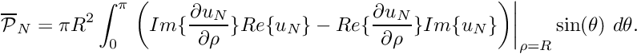
We refer to another tutorial for the derivation which shows (in the context of an acoustic fluid-structure interaction problem) why this is a sensible definition of the radiated power.
Comments and Exercises
The enumeration of the unknowns
As discussed in the introduction, most practically relevant solutions of the Helmholtz equation are complex valued. Since oomph-lib's solvers only deal with real (double precision) unknowns, the equations are separated into their real and imaginary parts. In the implementation of the Helmholtz elements, we store the real and imaginary parts of the solution as two separate values at each node. By default, the real and imaginary parts are accessible via Node::value(0) and Node::value(1). However, to facilitate the use of the elements in multi-physics problems we avoid accessing the unknowns directly in this manner but provide the virtual function
which returns a complex number made of the two unsigneds that indicate which nodal value represents the real and imaginary parts of the solution. This function may be overloaded in combined multi-physics elements in which a Helmholtz element is combined (by multiple inheritance) with another element, using the strategy described in the Boussinesq convection tutorial.
The accuracy of the boundary condition elements
As discussed above, the Dirichlet-to-Neumann mapping allows an "exact" implementation of the Sommerfeld radiation condition, provided the artificial outer boundary is sufficiently far from the scatterer that any near field effects have decayed. The actual accuracy of the computational results depends on various factors:
- The number of
FourierDecomposedHelmholtzDtNBoundaryElementalong the artificial domain boundary. Since these elements are attached to the "bulk"FourierDecomposedHelmholtzElementsit is important that the bulk mesh is sufficiently fine to resolve the relevant features of the solution throughout the domain. - The number of terms included in the sum (8) – specified in the call to the constructor of the
FourierDecomposedHelmholtzDtNMesh. - The accuracy of the integration scheme used to evaluate the integral in (8).
Exercises
Exploiting linearity
Confirm that the (costly) re-computation of the integral in actions_before_newton_convergence_check() after the first (and only) linear solve in the Newton iteration can be avoided by declaring the problem to be linear.
The accuracy of the boundary condition elements
- Explore the accuracy (and computational cost) of the application of the DtN boundary condition by varying the number of terms included in the sum (8). Specifically, confirm that an obviously wrong result is obtained if we choose
ProblemParameters::Nterms_for_DtN<ProblemParameters::Nterms.
- Explore the function
check_gamma()and confirm that the computed value for the integral provides a good approximation to the derivative of the exact solution. Here is a representative comparison obtained with the parameters used in the driver code listed above:

Scattering of a planar acoustic wave off a sound-hard sphere
Modify the driver code to compute the sound field created when a planar acoustic wave, propagating along the 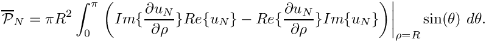-axis, impinges on a sound-hard sphere. The relevant theory is described in another tutorial; you can use the fact that in spherical polar coordinates a planar wave of the form
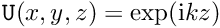
can be written as
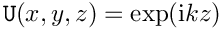
i.e. the wave comprises a single azimuthal Fourier component with . Note that the driver code already contains a namespace PlanarWave with several (but not all!) functions required for this task.
Source files for this tutorial
- The source files for this tutorial are located in the directory:
demo_drivers/fourier_decomposed_helmholtz/sphere_scattering/ - The driver code is:
demo_drivers/fourier_decomposed_helmholtz/sphere_scattering/sphere_scattering.cc
PDF file
A pdf version of this document is available.